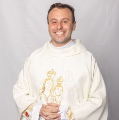

Sobre o nosso Santuário
O Santuário Santo Antônio de Pádua, localizado em Rio Bonito do Iguaçu - PR e pertencente à Diocese de Guarapuava, é um lugar de fé, acolhimento e esperança. Nossa igreja conta com celebrações de missas semanais e dominicais, atendimento na secretaria paroquial, além de diversas pastorais e movimentos que transformam vidas e fortalecem a caminhada cristã de nossos fiéis.
Horários
Missas:
Quarta-feira: 19:30 - Novena de Nossa Senhora Aparecida
Quinta-feira: 19:30 - Adoração ao Santíssimo
Sexta-feira: 19:30 - Novena Perpétua de Santo Antônio
Sábado: 19:00
Domingo: 08:30
Secretaria Paroquial:
Segunda a Sexta: 7:30 às 12:00 | 13:30 às 16:00
Sábado: 08:00 às 11:00
Confissões:
Quarta-feira: 09:00 ás 11:00 | 13:30 às 15:00
Quinta-feira: 09:00 ás 11:00 | 13:30 às 15:00
Padre Cristian
Reitor do Santuário

Padre Cristian dos Santos Jardim, Reitor do Santuário Santo Antônio de Pádua, pertencente à Diocese de Guarapuava, é o Pároco local. Ele celebra missas, atende confissões, conduz adorações e realiza reuniões, formações, retiros e acampamentos, mantendo grande proximidade com a comunidade e com a juventude local. Está há 1 ano em Rio Bonito do Iguaçu, onde foi acolhido por seu carisma e simplicidade.